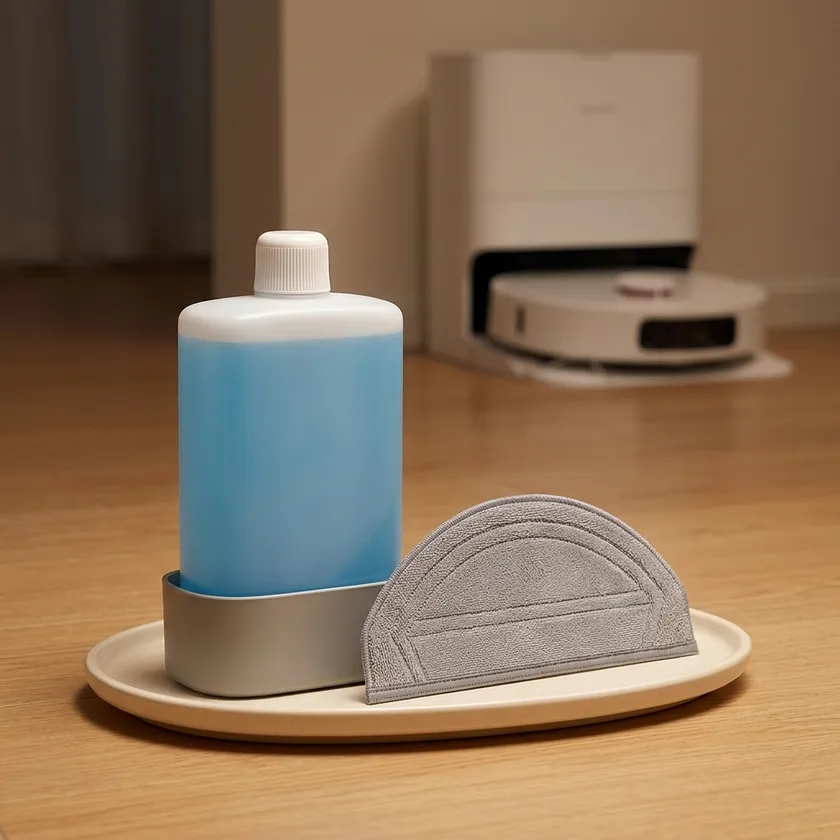

로보락 (Roborock)
로보락 세제 물걸레 쉰내·오수통 냄새 줄이는 정품 클리너 1L 세척·건조 루틴
글·구성: 제이상점 · 기종별 1:1 호환 실물 점검 · 교체 주기 비교표 · 스마트스토어 패키지 안내

핵심 관리 · 선택 체크포인트
- 매일 물걸레 청소를 돌린 뒤 도크 주변이나 오수통에서 꿉꿉한 냄새가 올라온다면, 일반 주방세제 대신 내부 배관과 자동 펌프에 맞춘 저포 포뮬러의 ‘로보락 전용 세제(정품 클리너 1L)’ 사용과 오수통·세척 트레이 동시 관리로 원인을 바로잡는 것이 핵심입니다.
- 로봇청소기 물걸레 냄새·오수통 악취가 생기는 구간과 전용 세제 역할: 온수 세척과 열풍 건조를 마쳤는데도 냄새가 남는 경우는 바닥 유분기가 극세사 안쪽에 남았거나 도크 하단 세척 트레이 거름망에 젖은 먼지가 고였을 때 주로 발생합니다.
- 로보락 S10·S9·S8·Qrevo 세제 투입 방식 및 관리 점검표: 보유 도크가 자동 세제통 탑재형인지 정수통 직접 희석형인지 구분해 정량을 사용하는 기준표입니다.
- 싱크대 하부장 2병 수납과 물걸레 패드 통풍 교대 건조: 자주 쓰는 1병은 도크 옆에 두고 예비 1병은 싱크대나 다용도실 하부장 정리함에 보관하면 리필 동선이 간편합니다. 물걸레 패드는 도크 건조에만 맡기기보다 주 1~2회 분리해 통풍 건조하면서 로보락 정품 전용 세제 1L 1병·2병 옵션으로 세척수를 관리해 주면 훨씬 상쾌합니다.
- 함께 읽으면 도움 되는 로보락 도크·소모품 관리 가이드: 도크 주변과 소모품 점검 순서는 로보락 S10 MaxV Ultra 소모품, 세제·물걸레·더스트백 세트 고르는 법 및 로보락 S9 MaxV Ultra 소모품 교체 전 확인할 4가지와 세트 선택법 글에서도 자세히 확인하실 수 있습니다.
실물 부품 디테일 · 관리 구성 이미지



부품 규격 · 점검 기준표
| 구분 항목 | 해당 기종 및 투입 위치 | 물걸레·오수통 냄새 예방 포인트 |
|---|---|---|
| 자동 세제통 탑재 도크 | S10 MaxV Ultra, S9 MaxV Ultra, S8 MaxV/Pro Ultra 등 | 원액을 전용 세제 카트리지에 보충(정수통 중복 투입 금지) |
| 정수통 희석 사용 도크 | 자동 세제통 미탑재 Qrevo·일반 물통형 모델 | 제조사 설명서 권장 희석 비율에 맞춰 정수통 물에 정량 혼합 |
| 오수통·걸레 교대 관리 | 전 기종 공통 스테이션 점검 | 오수통 비운 뒤 실리콘 패킹 세척 및 여분 걸레 패드와 교대 건조 |
💡 교체 주기가 겹치는 필터·브러시·물걸레·더스트백은 단품 배송비를 여러 번 내기보다 로보락 세제 기간별 세트(3개월·6개월·1년)로 미리 구비해 두면 물세척 후 24시간 교대 건조까지 끊김 없이 관리할 수 있습니다.
자주 묻는 질문 (FAQ)
Q. 자동 세제통이 있는 S10·S9·S8 모델인데 정수통에도 세제를 추가로 넣어도 되나요?
A. 권장하지 않습니다. 자동 세제통 모델은 도크가 세척수 공급 시 정량을 자동 혼합하므로 정수통에 중복 투입하면 농도가 과해져 바닥 미끄러움이나 거품 잔류의 원인이 될 수 있습니다.
Q. 전용 세제를 쓰는데도 오수통 냄새가 올라올 때는 어디를 먼저 점검하나요?
A. 도크 바닥의 물걸레 세척 트레이 거름망 슬러지와 오수통 상단 실리콘 패킹을 먼저 물로 헹궈 말려 주시고, 섬유 수명이 다한 걸레 패드는 새 물걸레·소모품 세트 옵션으로 교대해 주세요.
제이상점 1:1 검수 추천 패키지 · 구매 안내
![[호환] 로보락 S10 MaxV Ultra 소모품 전용 세제 물걸레 더스트백 1년 세트](../../assets/img/s10-product-bce69e90.webp)
함께 많이 찾는 보충 구성
대표 구성 참고가 70,100원대 (옵션·쿠폰별 스마트스토어 결제 화면 기준)
1년세트1년세트｜호환세제→정품세제 업그레이드6개월세트6개월세트｜호환세제→정품세제 업그레이드3개월세트
☑️ 주문 전 확인해 두면 좋은 제이상점 안심 포인트
· 기종별 1:1 전용 규격 검수: 모델명·연식에 맞는 호환·정품 구성을 검수해 오주문 불안을 줄였습니다.
· 해외직배송 미리 주문 팁: 중국 구매대행·해외직배송 상품이므로 마지막 여분 1개를 꺼내 쓰는 시점에 개인통관고유부호와 함께 여유 있게 주문해 두시면 훨씬 경제적인 비용으로 끊김 없이 교체하실 수 있습니다.
· 기종별 1:1 전용 규격 검수: 모델명·연식에 맞는 호환·정품 구성을 검수해 오주문 불안을 줄였습니다.
· 해외직배송 미리 주문 팁: 중국 구매대행·해외직배송 상품이므로 마지막 여분 1개를 꺼내 쓰는 시점에 개인통관고유부호와 함께 여유 있게 주문해 두시면 훨씬 경제적인 비용으로 끊김 없이 교체하실 수 있습니다.
📖 더 많은 가정 내 사용 스토리와 상세 후기가 궁금하시다면
📱 네이버 블로그 모바일 원문 보기 ↗